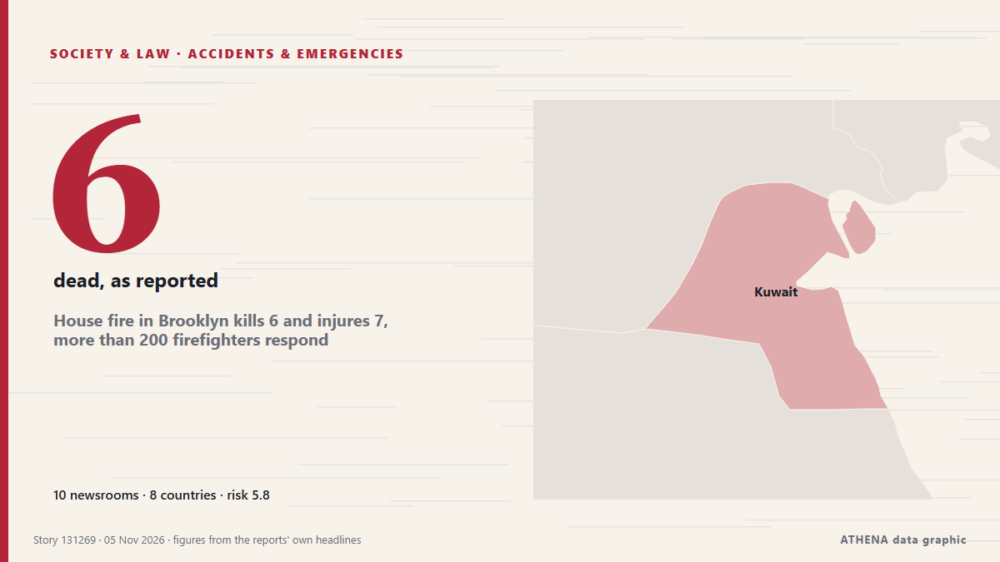

Unglücke und Notfälle
GesponsertPräsentiert von  Cybernetics and Artificial Intelligence Lab Welcome to the Cybernetics and Artificial Intelligence Laboratory, established at the Department of Business Administration of the National and Kapodistrian University of Athens. The lab is headed by Professor Dimitrios Thomakos. The lab aims to do research that can be published in top venues. Our research uses tools and methods of Artificial Intelligence, and lies in the following areas: - Forecasting - Decision making - Cyber security - Finance We are always looking forward to collaborating with exceptional students!
Cybernetics and Artificial Intelligence Lab Welcome to the Cybernetics and Artificial Intelligence Laboratory, established at the Department of Business Administration of the National and Kapodistrian University of Athens. The lab is headed by Professor Dimitrios Thomakos. The lab aims to do research that can be published in top venues. Our research uses tools and methods of Artificial Intelligence, and lies in the following areas: - Forecasting - Decision making - Cyber security - Finance We are always looking forward to collaborating with exceptional students!
| 24. Okt. | 0 |
|---|---|
| 25. Okt. | 0 |
| 26. Okt. | 0 |
| 27. Okt. | 0 |
| 28. Okt. | 2 |
| 29. Okt. | 0 |
| 30. Okt. | 2 |
| 31. Okt. | 1 |
| 1. Nov. | 2 |
| 2. Nov. | 3 |
| 3. Nov. | 4 |
| 4. Nov. | 6 |
| 5. Nov. | 4 |
| 6. Nov. | 0 |
Schlagzeilen werden auf Englisch angezeigt, wie veröffentlicht.

House fire in Brooklyn kills 6 and injures 7, more than 200 firefighters respond
NEW YORK, Nov 5, (AP): Six people died in a fire that barreled through a two-story home in New York early Thursday and seven others were injured, including three firefighters, t... von Arab Times
At least 50 whales stranded on New Zealand coast, several die: Report
Pilot whales found trapped among rocks along Ngawi coastline as rescuers work to save surviving animals. von Anadolu Agency (English)
Eastleigh building collapse: 2 more bodies recovered as 16 remain unaccounted for
Two more bodies have been recovered from the collapsed building in Eastleigh, Nairobi, bringing the number of bodies retrieved from the rubble to four as rescue operations enter their 14th day. von People Daily
1 Killed, 2 Injured After Helicopter Crashes Into Bay Near Miami
The Robinson R44 II helicopter went down late Wednesday morning near Bill Baggs State Park, off Key Biscayne, while on a trip to film boats on the water, the Miami-Dade Sheriff's Office said. von NDTV
Woman dead as people smuggler tries to run over Lebanese troops
A woman was wounded and eventually died of her wounds when a people smuggler tried to run over Lebanese troops in the outskirts of the eastern town of Arsal, the Lebanese Army said. von Naharnet
2 dead in shooting at Citibank complex in U.S. Florida: authorities
Sheriff Chad Chronister said the shooting is believed to be ‘a targeted incident’ von The Independent
After months lost at sea on a small boat, 5 people are rescued in the island nation of Kiribati
Authorities say five people, including two children, have been rescued in the South Pacific island nation of Kiribati after three months drifting at sea in a 20-foot skiff. von ABC News (International)
Crucial part of Florida Learjet found miles from crash site
An NTSB member said that the tail component was found in three parts within a range of 1.3 to 3.8 miles from the crash site. von The Independent
Meloni welcomes Switzerland saying it won't recoup Crans-Montana medical expenses
(ANSA) - ROME, 04 NOV - Premier Giorgia Meloni expressed satisfaction on Wednesday after being notified by Swiss President Guy Parmelin that Bern has decided not to seek to recoup the medical… von ANSA English
Spanish transport minister resigns days after deadly train crash
At least 69 people were killed and dozens injured in the collision south of the capital, Madrid. von BBC News
Woman, 20, identified as co-pilot in plane that crashed in Florida killing 9 people, got her pilot's licence in high school
Family of four, two close friends and nanny also died in crash as pilot identified as 55-year-old Jeff Gregory Family members on Monday identified a young Florida pilot as one of nine victims of a… von The Guardian
Hapag-Lloyd and ONE expect most Espirito Santo Express cargo severely damaged or lost
Hapag-Lloyd and ONE relayed Seaspan's assessment on 30 October that most cargo on the fire-damaged ship is severely damaged or lost. von Container Magazine
Spain's transport minister resigns after 69 killed in train crash disaster
Dr Marta Shahbazi was one of 69 people killed in the devastating crash last week. von Birmingham Mail
Stampede case: IHC grants protective bail to TikToker
ISLAMABAD: The Islamabad High Court (IHC) granted protective bail to TikToker Muhammad Ansar Jatt alias “Mr Patlu”, in a case about a stampede at his ‘mehndi’ function in Sialkot, which claimed two… von Business Recorder
1 Dead, 2 Injured After 2 Helicopters Collide On Mount Everest
Two helicopters collided near Mount Everest during Nepal's peak trekking season, killing an Indian tourist and injuring passengers and pilots. von Simple Flying
2 dead in plane crash near New Zealand's Nelson
The plane disappeared from flight tracker after dropping 1800 feet in 49 seconds. von Stuff
Helicopters collide below Mount Everest base camp, killing 1 person and injuring 2
Two helicopters collided near Mount Everest’s base camp, resulting in one fatality and two injuries. von Arab News
2 foreign nationals die of suspected electrocution in Bengaluru 5-star hotel’s pool
On Friday evening, two foreign nationals from Germany and Slovakia died from suspected electrocution in a hotel swimming pool. von Times of India
Pilot's chilling last words as jet crashes to ground in Florida, killing nine
The pilot could be heard screaming as she spoke to air traffic control about the situation. von Chronicle Live (Newcastle)